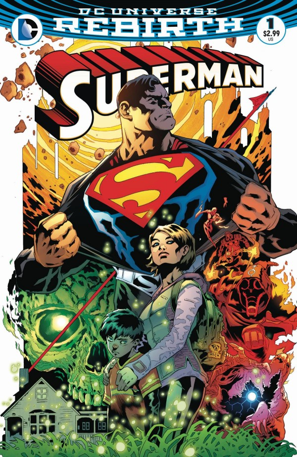

DC in Shame
I'm not much of a DC fan. Ever since they released their new 52 comic books, those comics went nowhere. Superman became more of a lone hero, Shazam had difficulties with his powers, and Green Lantern had more problems in space rather than problems on earth. But now that DC is doing their rebirth comics, a lot of fans are as happy as ever. I have to admit too, DC is doing well with the rebirth and their bring old characters back. I guess theres a bigger hope for them then I thought.